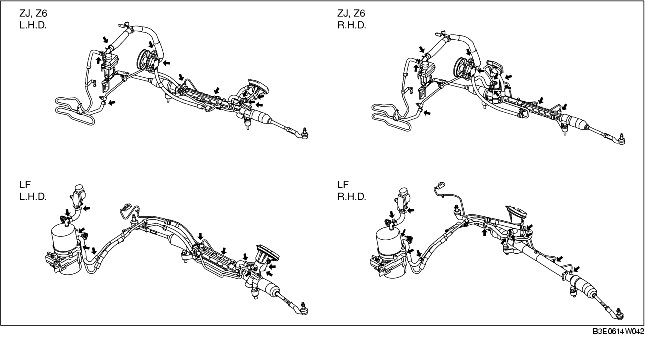

POWER STEERING FLUID INSPECTION
B3E061432040W01
Fluid Level Inspection
1. Verify that the fluid level is between MAX and MIN of the reserve tank when the engine is cold.
-
• If the fluid is not at the specified level, adjust the fluid level (MIN-MAX on reserve tank) by adding/draining the fluid.
-
Fluid specification
-
ATF M-III or equivalent (e.g. Dexron II)
Fluid Leakage Inspection
1. Start the engine and idle it.
2. Turn the steering wheel fully to left or right, to generate the fluid pressure.
-
Caution
-
• Do not maintain the steering wheel fully turned for 5 s or more. It is possible that oil temperature can rise and this will negatively affect the oil pump.
3. Inspect for the fluid leakage at the points indicated in the figure.

-
• If fluid leakage is found, repair the related parts.
Fluid pressure Inspection
1. Set the SSTs so that the valve of the SST faces toward the gear housing side as shown in the figure.
2. Disconnect the oil pump side joint of the pressure hose, connect the SSTs set in the Step 1.
-
Tightening torque
-
29.4-44.1 N·m {3.00-4.49 kgf·m, 21.6-32.5 ft·lbf}
3. Bleed the air from the system.
4. Open the gauge valve fully.
5. Start the engine, turn the steering wheel to the left and right to raise the power steering fluid to the appropriate temperature (50-60 °C {122-140 °F}).
6. Close the gauge valve fully.
7. Increase the engine speed to 1,000-1,500 rpm and measure the fluid pressure generated at the oil pump.
-
• If it is less than the specification, replace the oil pump as a single unit.
-
Caution
-
• Do not maintain the gauge valve fully closed for 5 s or more. It is possible that oil temperature can rise and this will negatively affect the oil pump.
-
Oil pump fluid pressure (oil temperature 50-60 °C {122-140 °F})
-
ZJ, Z6: 8.5-9.0 MPa {87-91 kgf/cm2, 1235-1305 psi}
-
LF: 10.4-11.0 MPa {107-112 kgf/cm2, 1509-1595 psi}
8. Open the gauge valve fully and increase the engine speed to 1,000-1,500 rpm.
9. Turn the steering wheel fully to the left and right, then measure the fluid pressure generated at the gear housing.
-
Caution
-
• Do not maintain the steering wheel fully turned for 5 s or more. It is possible that oil temperature can rise and this will negatively affect the oil pump.
-
Note
-
• If the fluid pressure is less than the specification, it is possible that the oil pump or gear housing is not operating correctly. Replace the oil pump as a single unit.
-
Gear housing fluid pressure (oil temperature 50-60 °C {122-140 °F})
-
ZJ, Z6: 7.6-9.0 MPa {78-91 kgf/cm2, 1103-1305 psi}
-
LF: 9.0-11.0 MPa {92-111 kgf/cm2, 1306-1585 psi}
10. After removing the SSTs, tighten the oil pump side joint of the pressure hose to the specified torque.
-
Tightening torque
-
29.4-44.1 N·m {3.00-4.49 kgf·m, 21.6-32.5 ft·lbf}
11. Bleed the air from the system.